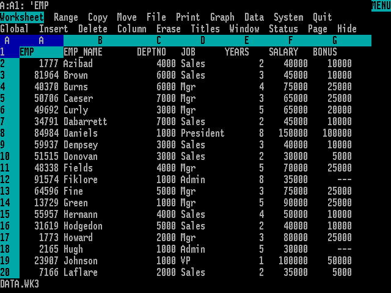

2 Entendiendo y organizando los datos industriales con la hoja de cálculo.
La hoja de cálculo es una herramienta omnipresente hoy día en todos los ámbitos de trabajo y educativos. Desde la aparición de Visicalc, en 1978, ha contribuido a la gestión de miles de empresas, se ha utilizado de manera general en análisis de datos y sus gráficos se han utilizado y se utilizan en publicaciones e informes de todas clases. En la década de los años 80 del pasado siglo, la hoja de cálculo Lotus 1-2-3 fue la aplicación más utilizada en los ordenadores IBM-PC y compatibles, y consiguió facturaciones millonarias para la empresa matriz. Lotus 1-2-3 dominó el mercado hasta la aparición de Microsoft Windows a finales de los años 80; el nuevo sistema operativo favoreció la implantación de Excel, que desde entonces se convirtió en la hoja de cálculo dominante.



2.1 Usos de la hoja de cálculo.
Las hojas de cálculo son muy útiles para recoger la información de un conjunto de observaciones. Entre sus principales usos, están:
- La introducción, edición y almacenamiento datos.
- El filtrado y corrección de errores.
- La manipulación básica, por ejemplo, mediante tablas dinámicas
- La preparación y edición de gráficos, incluyendo gráficos dinámicos
- La presentación de la información, pudiendo apoyarse en herramientas adicionales como Microsoft PowerPoint.
Los datos se pueden recoger y guardar de múltiples formas. Cuando la recogida de datos se hace de forma manual en papel, es necesario registrar en el ordenador los datos recogidos. Lo más frecuente es que este registro se haga en hojas de cálculo, como Microsoft Excel o Google Sheets. En algunos casos, el almacenamiento se hace sobre bases de datos, genéricas o desarrolladas a medida.
Actualmente, la tendencia es recoger los datos o bien de forma automática, o bien de forma manual sobre sistemas informatizados (pantallas), lo que permite eliminar el papel y disponer directamente de los datos en un formato digitalizado.
En la actualidad, la mayoría de los equipos y líneas de producción se interconectan con los sistemas de información (ver IoT) y almacenan en tiempo real todos los datos necesarios, lo que libera al operario de la pesada tarea de reintroducirlos manualmente, a la vez que reduce los errores debidos a la imputación incorrecta.
En todos los casos, es imprescindible asegurar que los sistemas de información pueden exportar sus datos a ficheros de texto tipo fichero plano o tipo CSV, de forma que podamos importarlos tanto a Excel como a R, como veremos más adelante. Estos sistemas de exportación de datos deben diseñarse de forma flexible y abierta, para que tanto la captura como la exportación puedan modificarse y adaptar la recogida de la información a las necesidades de cada momento.
En este libro trataremos exclusivamente de lo que llamaremos datos rectangulares: grupos de valores que están asociados a una o más variables, y a varias observaciones. Hay muchos más datos que no se ajustan a esta organziación: imágenes, sonidos, archivos documentales de texto. Pero la forma más común de almacenar datos industriales es la de las tablas rectangulares, organizadas según el principio de los datos arreglados.
2.2 Algunas definiciones importantes
2.2.1 Población y muestra
Una población es un conjunto de de personas, cosas o, en general, objetos en estudio. A veces, una población es demasiado grande para que podamos abarcarla completa; para poder estudiarla, obtenemos una muestra, que consiste en un subconjunto de la población que hemos seleccionado para su estudio. El proceso de obtener una muestra se llama muestreo, y se realiza de acuerdo con normas y procedimientos específicos.
En muchas ocasiones, cuando se recogen los datos como resultado de una experimentación, definimos la población como todos los resultados que podríamos haber obtenido. Llamamos a este conjunto de posibles resultados una población conceptual. Por ejemplo, cuando medimos el \(pH\) de varias muestras de leche, la población es el conjunto de todos los resultados posibles que podríamos haber tenido. Muchos problemas de ingeniería y tecnología se refieren a poblaciones conceptuales.
En la mayoría de las ocasiones, nuestros datos provienen de una muestra obtenida de una población,
Cuando tomamos una muestra, debemos estar seguros de que contiene las propiedades que queremos estudiar en la población. En ese caso, decimos que la muestra es representativa: los individuos de la muestra son representativos de la población. Para que la muestra sea representativa, debe ser obtenida mediante un muestreo aleatorio. Una muestra aleatoria simple de tamaño \(n\) consiste en \(n\) individuos de una población, elegidos de forma que cada conjunto posible de \(n\) individuos tiene la misma probabilidad de ser elegido.
El concepto de probabilidad se explica en el capítulo 6
2.2.2 Parámetro y estadístico
Un parámetro es una característica de una población. Podemos estimar su valor mediante la extracción de una muestra, que utilizaremos para calcular un estadístico muestral. Llamamos estadístico a un número que representa una propiedad o característica de la muestra, y constituye una estimación del valor de un parámetro de la población que estamos estudiando.
2.2.3 Variables y casos
A los objetos descritos en un conjunto de datos los llamamos casos, de forma genérica. A veces, estos casos pueden corresponder a personas; en ese caso podemos llamarlos individuos. Cuando los objetos que estudiamos no son personas, como es lo habitual en el entorno industrial, utilizamos la nomenclatura genérica.
Un atributo es una característica que define una propiedad de un objeto, persona o cosa. Por ejemplo, edad, peso, altura, sexo, color de ojos, son atributos de una persona. Llamamos variable a una característica cualquiera de un individuo que puede ser medida. Una variable puede tomar diferentes valores en diferentes individuos o casos.
Según estas definiciones que acabamos de ver, una muestra está formada por un conjunto de casos, y cada caso contiene un determinado número de variables, que contienen los valores que hemos analizado o medido.
2.2.4 Tipos de variables
Algunas variables, como el color, sirven para clasificar los individuos en categorías. Otras, como la altura o el peso de un individuo, pueden tomar valores numéricos con los que podemos hacer cálculos. Por ejemplo, podemos sumar la altura de varias personas, pero no tiene sentido sumar los colores del arco-iris (aunque sí podemos contarlos, y hacer cálculos con estos recuentos). También podemos categorizar variables continuas: podemos clasificar nuestro grupo de personas en altas o bajas, y podemos contar cuántas personas entran en cada categoría.
| Variables cualitativas o categóricas |
Variables cuantitativas o métricas |
||
|---|---|---|---|
| Nominales | Ordinales | Discretas | Continuas |
| Valores en categorías arbitrarias | Valores en categorías ordenadas | Valores enteros en escala numérica | Valores continuos en escala numérica |
| (sin unidades) | (sin unidades) | Unidades contadas | Unidades medidas |
Una variable categórica coloca a un individuo en uno o más grupos o categorías
Una variable métrica toma valores numéricos con los que tiene sentido realizar cálculos aritméticos como sumar, restar, etc.
Las variables categóricas se conocen también como variables cualitativas porque indican cualidades.
Las variables métricas se conocen también como variables cuantitativas porque indican cantidades.
A veces se utiliza la palabra cualitativo de forma incorrecta para indicar calidad, por ejemplo cuando alguien dice: “Este envase es muy cualitativo”. Deberíamos decir “Este envase tiene gran calidad”. Cualitativo no se deriva de calidad, sino de cualidad.
2.2.5 Ejemplos de variables
2.3 Reglas básicas para la creación de las variables.
Según hemos visto, existen diferentes tipos de variables, cualitativas (categóricas) y cuantitativas (métricas). Normalmente, los valores de las variables categóricas se describen mediante textos del tipo “color blanco”, “hombre”, “mujer”, “alto”, “bajo”, etc. Suelen corresponder con características descriptivas, y por lo tanto, no puede hacerse cálculos directamente con ellos, a menos que se hayan resumido, por ejemplo, mediante un conteo. Las variables métricas consisten en valores numéricos, que pueden ser enteros (\(1\);\(24\);\(350\)) o continuos (\(1,456\);\(0,35\)) y que sí pueden utilizarse directamente para hacer cálculos tales como sumas, etc.
Una variable está descrita siempre por un nombre, que designa la variable, y un valor o conjunto de valores, que corresponden a los casos. Este conjunto de valores, como acabamos de ver, pueden ser textos o números.
Ejemplos de valores de texto: “Carlos”, “fruta”, “Lluvia fuerte”, “muy ácido”, “sabor a fresa”
Ejemplos de valores numéricos: \(1\); \(7\); \(10,65\)
Siempre que sea posible, utilizaremos el nombre del atributo o característica que estamos midiendo o analizando, o su abreviatura, para designar una variable; por ejemplo, si estamos recogiendo la altura de una serie de personas, llamaremos altura a la variable; si estamos recogiendo el peso, usaremos el nombre peso, etc.
En una hoja de cálculo, colocaremos el nombre de la variable en la primera fila, e iremos añadiendo los valores debajo, un valor por línea.
A veces, asignar un nombre a una variable no es todo lo fácil que podría parecer a simple vista. Por ejemplo, ¿qué nombre daríamos a una variable que va a recoger los valores de \(pH\) de la leche en una cuba de queso en el momento de añadir el cuajo? Está claro que \(pH\) no es suficiente, porque en el proceso hay varias medidas de \(pH\) y sería bueno que pudiésemos diferenciarlas con facilidad. En un caso como éste, es probable que necesitemos utilizar varias palabras o abreviaturas que describan mejor el nombre de la variable.

Para la construcción correcta de estos nombres, se han establecido un conjunto de normas, con el objetivo de evitar errores y facilitar el intercambio de los datos entre diferentes programas de análisis.
2.3.1 Reglas para los nombres de las variables
Las hojas de cálculo admiten que introduzcamos cualquier texto en una celda; no hay prácticamente ninguna limitación a los nombres que podemos usar para nuestras variables. Excel utilizará los nombres con cualquier carácter sin inconvenientes.
Sin embargo, otros programas informáticos, entre ellos R, son mucho más restrictivos. Por esta razón, estableceremos una serie de reglas para construir los nombres de variables, que aplicaremos a nuestras tablas de Excel, y que nos permitirán intercambiarlas con otros programas, como R, con toda seguridad.
- Un nombre válido consiste en una combinación de letras, números y signo de subrayado (\(\_\))
- Un nombre de variable no puede empezar por un número, un punto o un signo de subrayado (\(\_\)); debe empezar siempre por una letra.
- Los nombres de variables irán siempre en minúsculas. Según esta regla, \(Peso\) no es un nombre válido, pero \(peso\) si lo es.
No utilizaremos espacios en blanco, acentos ni caracteres especiales como \(\tilde{n}\), \(\%\), guiones o paréntesis.
Hay veces en que nos interesa unir varias palabras para construir un nombre de variable. Se utilizan diferentes formas de unir palabras, por ejemplo:
un punto, como en \(peso.en.cm\),
lo que se ha llamado escritura de camello (camelCase), que se llama así por el uso de mayúsculas y minúsculas mezcladas (\(PesoEnCm\))
el signo de subrayado \(\_\), como en \(peso\_en\_cm\)
Algunas de estas opciones son utilizadas en distintas comunidades de usuarios, por ejemplo la opción 1 es utilizada en la guía de estilo de Google, y la opción 2 es muy utilizada por los programadores del entorno de los lenguajes de Microsoft. Nosotros utilizaremos el signo de subrayado (\(\_\)), que es la forma más usada en el entorno de programación de R.
Siempre se separarán las palabras mediante el signo de subrayado (_) para facilitar la lectura. Así, aunque \(temperatura1\) es un nombre válido, preferiremos \(temp\_1\); es más corto y de lectura más clara. Igualmente, preferiremos \(peso\_empaquetado\) a \(pesoempaquetado\)
Mantendremos los nombres razonablemente cortos para facilitar la lectura. Aunque podemos hacer los nombres todo lo largos que queramos, es más cómodo utilizar nombres cortos. Por ejemplo, podríamos utilizar \(temperatura\_de\_la\_leche\_al\_cuajar\), pero preferiremos abreviarlo como \(temp\_cuajo\).
Nombres no válidos:
- \(peso\ en\ gramos\) (contiene espacios)
- \(pH\_de\_la\_leche\_en\_Recepci\acute{o}n\) (demasiado largo, tiene un acento, tiene mayúsculas)
- \(extracto\_seco\_total\_a\_la\_salida\_de\_la\_salmuera\) (demasiado largo)
Alternativas válidas:
- \(peso\_g\)
- \(pH\_leche\_rec\) (en este caso, de manera excepcional, podemos mantener el uso de la mayúscula por corrección formal)
- \(est\_salida\_sal\)
Un caso particular es el uso de la \(\tilde{n}\), ya que no hay una alternativa fácil para el uso en las fechas (\(a\tilde{n}o\)). R admite el uso de la \(\tilde{n}\) en los nombres de variables, por lo que podremos usarlo con cuidado, poniendo atención a los posibles errores que se pudiesen producir en algunas librerías.
2.4 Almacenando nuestros datos: algunos errores comunes.
Cuando nos incorporamos a un equipo de trabajo existente, lo más seguro es que el equipo disponga ya de un sistema de archivo de los datos, de acuerdo con sus prácticas habituales. A veces el diseño de la captura de datos sigue aproximadamente el modelo manual en papel. Se introducen los datos en la hoja de cálculo y una vez completados, se imprime el documento para su archivo.
El error más común que cometemos es tratar la hoja de cálculo como un bloc de notas, es decir, hacer anotaciones de forma libre, colocar los datos y el resultado de los análisis al lado y en cualquier parte de la hoja, y apoyarnos en el contexto para interpretar lo que hemos guardado. Pero para que el ordenador sea capaz de analizar nuestros datos de manera eficiente, debemos estructurarlos de tal forma que el programa use la información tal como nosotros queremos.
Es común utilizar una hoja para guardar múltiples tablas de datos, tal como vemos en la Figura 2.1. Esta estructura, sin embargo, resulta enormemente confusa para su análisis, o lo imposibilita completamente.

En otros casos, los datos se guardan en hojas de cálculo que se componen de diferentes pestañas para cada semana, cada mes o cada año, como vemos en la Figura 2.2. Sin embargo, esta forma de almacenar los datos tampoco es la óptima para su análisis.

¿Y utilizar diferentes pestañas para cada tabla? En este caso, la respuesta es sí y no. Si las diferentes tablas presentan situaciones diferentes, o datos que no son coincidentes, podemos utilizar diferentes pestañas. Pero si los datos están vinculados, por ejemplo, se corresponden con medidas hechas en fechas diferentes (meses, años), la respuesta adecuada es que las pestañas no son la forma correcta de almacenarlos datos; la forma recomendad es añadir una variable que nos permita diferenciar los datos por fecha; nuestro programa de análisis nos permitirá filtrar los datos según la fecha que deseemos, y todos estarán en una única tabla, facilitando la coherencia del conjunto.
Hay muchas formas de almacenar la información en una hoja de cálculo, pero sólo la estructura de datos ordenados o arreglados facilita la utilización de los datos tanto por la hoja de cálculo como por otros programas de análisis.
2.5 Los datos ordenados o arreglados (tidy data)
De la misma manera que la gramática permite ordenar y estructurar un escrito de acuerdo a reglas comunes, hay reglas para que el almacenamiento de los datos sea lo más homogéneo posible y se reduzcan los errores al mínimo.
Las reglas principales al almacenar nuestros datos en una hoja de cálculo son tres:
columnas=variables,
filas=observaciones,
celdas=valores.
Cada variable debe tener su propia columna, cada observación debe tener su propia fila, y cada valor debe tener su propia celda o casilla .
Estas tres reglas básicas son las que hacen que nuestro conjunto de datos sea ordenado (o arreglado)(Garret Grolemund Hadley Wickham Mine Çetinkaya-Rundel 2023) (hay edición online en español: (Garret Grolemund Hadley Wickham 2023):
La Figura 2.3 muestra estas reglas de forma visual.

Estas tres reglas están interrelacionadas porque es imposible satisfacer sólo dos de tres.
En una hoja de cálculo, una tabla de datos arreglada tendría este aspecto:
Datos rectangulares: formato tabla
2.6 Para resolver
Poner aquí distintos ejemplos de nombres de variables para verii son válidos o no Describir medidas y preguntar cómo llamaríamos a esa variable (por ejemplo, temperatura de laleche que acabamos de descargar de una cisterna)